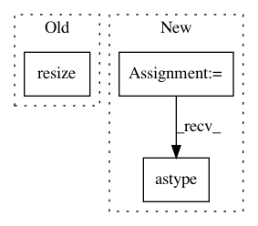

09b2b1a7cab804077ad3bdaee2d86e6994ec8126,cellprofiler/modules/watershed.py,Watershed,run,#Watershed#Any#,107
Before Change
original_shape = x_data.shape
if x.volumetric:
x_data = skimage.transform.resize(x_data, (original_shape[0], 256, 256), order=0, mode="edge")
distance = scipy.ndimage.distance_transform_edt(x_data)
distance = mahotas.stretch(distance)
After Change
factors
)
threshold = skimage.filters.threshold_otsu(x_data)
x_data = x_data > threshold
distance = scipy.ndimage.distance_transform_edt(x_data)
distance = mahotas.stretch(distance)
surface = distance.max() - distance
if x.volumetric:
footprint = numpy.ones(
(
self.connectivity.value,
self.connectivity.value,
self.connectivity.value
)
)
else:
footprint = numpy.ones(
(
self.connectivity.value,
self.connectivity.value
)
)
peaks = mahotas.regmax(distance, footprint)
if x.volumetric:
markers, _ = mahotas.label(peaks, numpy.ones((16, 16, 16)))
else:
markers, _ = mahotas.label(peaks, numpy.ones((16, 16)))
y_data = mahotas.cwatershed(surface, markers)
y_data = y_data * x_data
if factor > 1:
y_data = skimage.transform.resize(
y_data,
original_shape,
mode="edge",
order=0,
preserve_range=True
)
y_data = numpy.rint(y_data).astype(numpy.uint16)
else:
markers_name = self.markers_name.value
markers = images.get_image(markers_name)
In pattern: SUPERPATTERN
Frequency: 3
Non-data size: 3
Instances
Project Name: CellProfiler/CellProfiler
Commit Name: 09b2b1a7cab804077ad3bdaee2d86e6994ec8126
Time: 2017-09-02
Author: allen.goodman@icloud.com
File Name: cellprofiler/modules/watershed.py
Class Name: Watershed
Method Name: run
Project Name: matplotlib/matplotlib
Commit Name: 431bd8e37469c6e6e0e26fff6a6575982865904a
Time: 2019-04-04
Author: anntzer.lee@gmail.com
File Name: lib/matplotlib/figure.py
Class Name: Figure
Method Name: set_size_inches
Project Name: Esri/raster-functions
Commit Name: b895d74347d7749b02d8ea57b5f5d71101297a34
Time: 2015-10-18
Author: akferoz@esri.com
File Name: functions/BlockStatistics.py
Class Name: BlockStatistics
Method Name: updatePixels